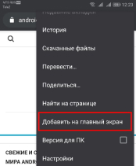

Запустите Chrome для Android и откройте веб-сайт или веб-страницу, которую вы хотите закрепить на главном
экране. Нажмите кнопку меню и нажмите «Добавить на главный экран».

iPhone, iPad
Запустите браузер Safari на iOS от Apple и перейдите на веб-сайт или веб-страницу, которую вы хотите добавить на
домашний экран. Нажмите кнопку «Поделиться» на панели инструментов браузера – это прямоугольник со стрелкой
вверх.